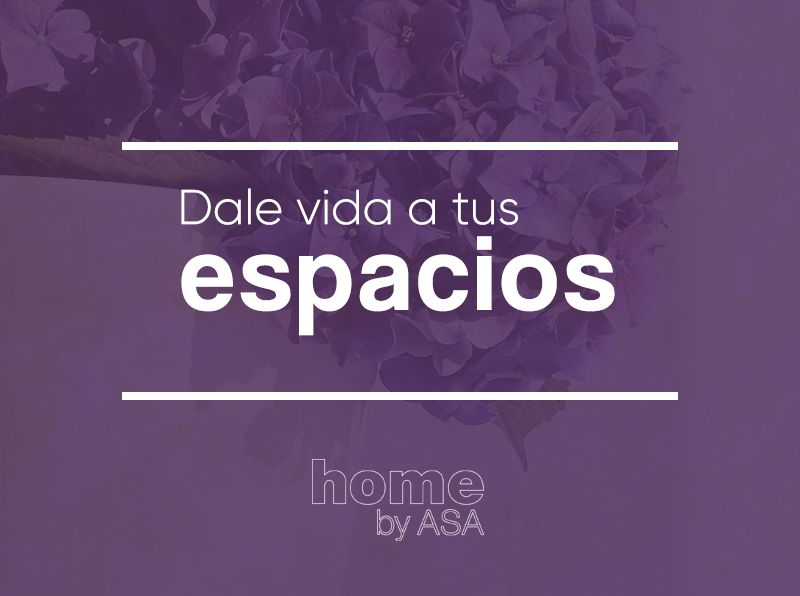
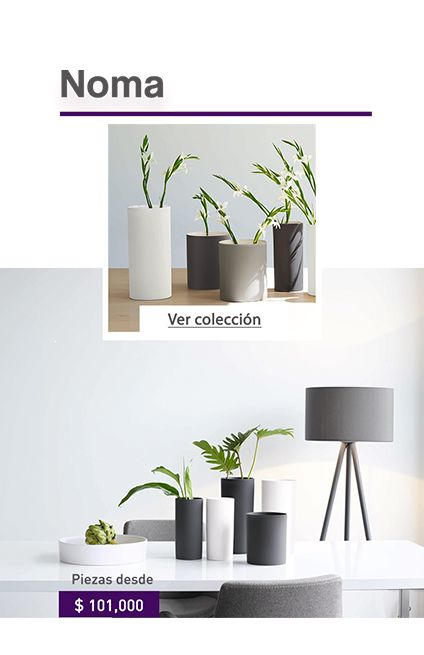
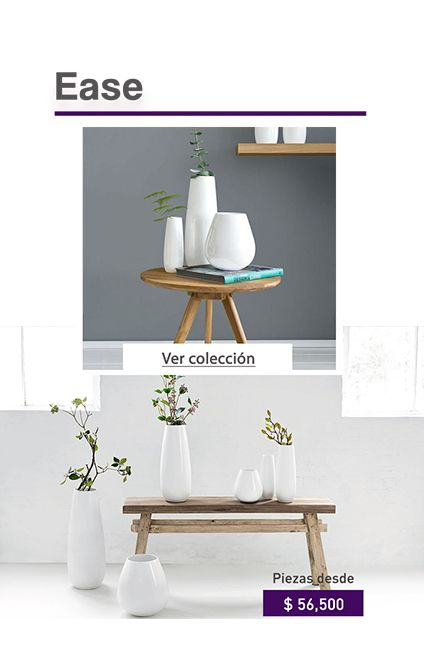

<div class="row">
    <div class="col-sm-12">
        
        <div class="row">
            <div class="col-xs-12">
                <h2 class="title-blog">DISEÑOS DE FLOREROS DIFERENTES PARA DARLE VIDA A TUS ESPACIOS</h2>
                <p class="text-justify">En los espacios siempre buscamos esos toques que ayuden a darle vida a nuestra decoración, con algunos elementos
                    que terminen de darle la imagen que queremos proyectar.
                    <br>
                    <br>Para este caso llega entonces el turno de los complementos, esos artículos que conectan el diseño y realzan
                    las características adecuadas en un mismo espacio, por lo que vamos a hablar en esta ocasión de los floreros.
                    <br>
                    <br>Empecemos con los floreros metálicos, esos que muestran formas nuevas, diseños únicos y variedad de tamaños.
                    La decoración con piezas metálicas siempre estará con ese toque de vanguardia que muchas veces buscamos
                    en nuestros espacios, además de mostrar cierta “fuerza” en nuestra decoración.
                </p>
            </div>
        </div>
        <div class="row">
            <div class="col-xs-12">
                <p class="text-justify">Para aquellos que buscan la elegancia como principal característica, están los floreros de cristal que siempre
                    muestran delicadeza, que ayuda a alivianar la carga visual en la decoración, un buen ejemplo de esto
                    es cuando se ponen este tipo de elementos sobre estanterías, ya que se genera un equilibrio adecuado
                    entre las formas y los elementos.
                    <br>
                    <br>Para los espacios que necesitan toques de color, están los floreros con distintos tonos, que además de
                    jugar con los materiales y las formas, nos genera dinamismo en nuestros espacios, gracias a su variedad
                    en el color. Lo más importante con este tipo de productos es que es que dará combinaciones interesantes
                    en tu espacio.
                    <br>
                    <br>Por ultimo te daremos un tip para las habitaciones que quieras darles amplitud; lo mejor es escoger floreros
                    altos, ya que al jugar con tamaños en estos elementos crea la sensación de un mayor espacio pues la ligereza
                    en las formas da aire de versatilidad.
                </p>
            </div>
        </div>
        <div class="row">
            <div class="col-sm-6">
                <a href="javascript:void(0)" [routerLink]="['/categoria']" [queryParams]="{ pageSize: '10000', group: '015', collection: 'Noma' }">
                    
                </a>
            </div>
            <div class="col-sm-6">
                <a href="javascript:void(0)" [routerLink]="['/categoria']" [queryParams]="{ pageSize: '10000', group: '015', collection: 'Ease' }">
                    
                </a>
            </div>
        </div>
    </div>
</div>